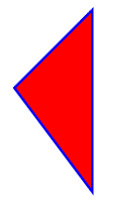

Drawing Paths and Lines
Ongoing HTML5 Canvas Tutorial: 1 2 3 4 5 6 7 8 9 10 11 12 13 14 15
To make shapes other than circles and rectangles you can create paths on a HTML5 canvas. These are lines that are connected together. You then close the lines and specify a fill or stroke. The methods available when drawing paths are these:
moveTo
lineTo
closePath
The first one, moveTo, is like lifting your pencil from a piece of paper. Move the pencil to a new area of the paper and you can start drawing a new shape. In between the round brackets of the method you need two arguments:
moveTo( X, Y )
X is how far from the left edge of the canvas you want to start from; Y is how far down from the top of the canvas. The value is in pixels.
The second one, lineTo, is used for drawing straight lines. Again, the method takes two arguments:
lineTo( X, Y)
X and Y are the left an top positions of where you want the line drawn to.
The third method, closePath, is used to draw a line from your last point to the first one, thus closing your shape.
If that's not too clear, let's draw a triangle to illustrate what it all means.
You can create a new page for this from your template. Or with your circle code open, just click File > Save As in your text editor. Then type a new file name, something like paths.html. When the new page is created, delete the code between the curly brackets of the IF statement for the drawOnCanvas function. Now add the following code in its place:
You've met the beginPath method before. It clears the list of paths already in memory, resetting things for you to start again. The next line is this:
canvas_context.moveTo( 75, 100 );
We're moving our "pencil" to a position of 75 pixels left and 100 pixels down. Imagine that the point of the pencil is now on the paper.
Next, we use lineTo to move to a position of 150 pixels left and 200 down. A line is then drawn from the starting position (the one from moveTo) to the end position (the one from lineTo).
The next line moves the pencil to a new position with lineTo( 150, 25 ). Again, a line is drawn. This time from the previous lineTo X and Y positions to the new ones.
The second last line closes the path. You don't need anything between the round brackets because the 2D context has all your line points in a list. It just draws a line from the last point to the first one.
Save you work and try it out. Load your web page in a browser. When you click the button, you should see this:
To see what closePath does, comment the line out like this:
//canvas_context.closePath();
Save the change and refresh the page in your browser. Click the button again and you'll see your triangle change to this:
In the image above, a line is now not drawn from the end point to the first point. So if you don't want to close your paths, leave out the closePath method to keep them open.
If you want a filled triangle (or any other shape) use the fill method with a fill style: (If you don't include a fill style the colour used to fill the shape will be black.)
canvas_context.fillStyle = "rgb(255,0,0)";
canvas_context.fill();
The above two lines will get you a red triangle.
You can have a fill and a stroke:
canvas_context.fillStyle = "rgb( 255,0,0 )";
canvas_context.stroke();
canvas_context.fill();
A stroke colour can be specified, too:
canvas_context.fillStyle = "rgb(255,0,0)";
canvas_context.strokeStyle = "rgb( 0, 0, 255 )";
canvas_context.stroke();
canvas_context.fill();
The strokeStyle method works just like fillStyle. The effect of the code above is to add a 1 pixel blue border around the triangle. A value of 1 pixel is the default. However, you can set a different stroke width. This is done with the lineWidth method:
canvas_context.fillStyle = "rgb(255,0,0)";
canvas_context.strokeStyle = "rgb( 0, 0, 255 )";
canvas_context.lineWidth = 5;
canvas_context.stroke();
canvas_context.fill();
The new triangle would then look like this:

In the next part of this Javascript canvas tutorial, we'll take a look at line ends and line joins.